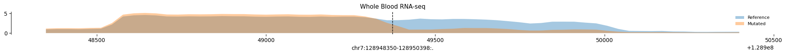

import tensorflow as tfPredicting alternative polyadenylation with Borzoi
notebook
gene46100
Predicting alternative polyadenylation with Borzoi
Overview
Borzoi is a deep learning model that, similarily to Enformer:
Takes DNA sequences as input (one-hot encoded)
Uses a convolutional neural network architecture and transformer layers
Predicts multiple genomic features simultaneously
However, Borzoi was rained to predict RNA-seq coverage as well, which makes it useful for the following aplication: predicting 3’UTR alternative polyadenylation (APA).
3’UTR APA is a post-transcriptional regulatory mechanism that allows transcripts from a gene to have different lengths due to differential polyA signal usage leading to different lengths of 3’UTR regions. Variants on the 3’UTR sequence that alter the length of the region are refered to 3’aQTLs read more here.
Objective
In this notebook we will learn how to use borzoi to predict RNA-seq coverage around one 3’aQTL by predicting on both the reference and the alternative sequence. We will plot the differences on RNA-seq prediction at the 3’UTR for the whole blood borzoi tracks.
1. Set up a borzoi-adequate environment
The requirements for running borzoi are outlined here. The most important dependencies are python ==3.10 and tensorflow==2.15.x.
I had to install python 3.10 and found that working with a venv worked as of may 5th 2025.
I followed the instructions to use the GPU of my macbook here
brew install python@3.10
python3.10 -m venv ~/borzoiTools
source ~/borzoiTools/bin/activate
python -m pip install -U pip
python -m pip install ipykernel
python3 -m ipykernel install --user --name=borzoiTools
python3 -m pip install tensorflow==2.15
python3 -m pip install tensorflow-metalTo verify python and tensforflow versions, run the following chunks:
gpus = tf.config.experimental.list_physical_devices('GPU')
gpus[PhysicalDevice(name='/physical_device:GPU:0', device_type='GPU')]if gpus:
try:
# Currently, memory growth needs to be the same across GPUs
for gpu in gpus:
print(gpu)
tf.config.experimental.set_memory_growth(gpu, True)
print("TensorFlow is using the GPU.")
except RuntimeError as e:
print(e)
else:
print("TensorFlow is not using the GPU. Check your TensorFlow installation.")PhysicalDevice(name='/physical_device:GPU:0', device_type='GPU')
TensorFlow is using the GPU.import sys
print(sys.version)3.10.17 (main, Apr 8 2025, 12:10:59) [Clang 16.0.0 (clang-1600.0.26.6)]print(tf.__version__)2.15.02. Install borzoi and dependencies
Borzoi depends on the baskerville software, run the following chunks to install both on your environment:
%cd /Users/sofiasalazar/Desktop/IM_lab/borzoi_folder/Users/sofiasalazar/Desktop/IM_lab/borzoi_folder/Users/sofiasalazar/borzoiTools/lib/python3.10/site-packages/IPython/core/magics/osm.py:417: UserWarning: This is now an optional IPython functionality, setting dhist requires you to install the `pickleshare` library.
self.shell.db['dhist'] = compress_dhist(dhist)[-100:]!git clone https://github.com/calico/baskerville.git%cd baskerville
%pip install -e .%cd ..
!git clone https://github.com/calico/borzoi.git%cd borzoi
%pip install -e .Then I installed other libraries that we will be using as well
%pip install kipoiseq
%pip install h5pyHere I had to restart the kernel to use baskerville
3. Download models
The borzoi models are each ~1GB (~4GB in total as there are 4 models, each correspond to a cross validation fold from the training process). Further down you’ll see that we can choose to predict using the 4 models or only a couple of them.
%cd /Users/sofiasalazar/Desktop/IM_lab/borzoi_folder/borzoi
! ./download_models.sh 4. Set up borzoi and helper functions
The previous steps are run only once, afterwards, we can set up the borzoi functions as well as other utilities to extract the reference sequence and mutate it.
import os
import h5py
import numpy as np
import pandas as pd
import tensorflow as tf
import baskerville
from baskerville import seqnn
from baskerville import gene as bgene
from baskerville import dna
import json
import kipoiseq
import pyfaidxgpus = tf.config.experimental.list_physical_devices('GPU')
gpus[PhysicalDevice(name='/physical_device:GPU:0', device_type='GPU')]DEVICE = "/GPU:0"Change the following paths to your personal paths
BORZOI_PATH = "/Users/sofiasalazar/Desktop/IM_lab/borzoi_folder/borzoi"
models_path = os.path.join(BORZOI_PATH, "examples/saved_models" )
fasta_file = "/Users/sofiasalazar/Library/CloudStorage/Box-Box/imlab-data/Reference-Data/ref_sequences/hg38/Homo_sapiens_assembly38.fasta"
params_file = os.path.join(BORZOI_PATH, "examples/params_pred.json")
targets_file = os.path.join(BORZOI_PATH, "examples/targets_human.txt")The following classes will help us extract the reference genome sequence, mutate it and one hot encode it.
class FastaStringExtractor:
def __init__(self, fasta_file):
self.fasta = pyfaidx.Fasta(fasta_file)
self._chromosome_sizes = {k: len(v) for k, v in self.fasta.items()}
#import pd.Interval as Interval
def extract(self, interval: kipoiseq.Interval, snp_position = None, snp_base=None, **kwargs) -> str:
# Truncate interval if it extends beyond the chromosome lengths.
chromosome_length = self._chromosome_sizes[interval.chrom]
trimmed_interval = kipoiseq.Interval(interval.chrom,
max(interval.start, 0),
min(interval.end, chromosome_length),
)
# pyfaidx wants a 1-based interval
sequence = str(self.fasta.get_seq(trimmed_interval.chrom,
trimmed_interval.start + 1,
trimmed_interval.stop).seq).upper()
# Apply SNP modification if specified
if snp_position and snp_base:
pos = snp_position - trimmed_interval.start - 1
if 0 <= pos < len(sequence):
print(sequence[pos-1:pos+2])
sequence = sequence[:pos] + snp_base + sequence[pos + 1:]
print(sequence[pos-1:pos+2])
# Fill truncated values with N's.
pad_upstream = 'N' * max(-interval.start, 0)
pad_downstream = 'N' * max(interval.end - chromosome_length, 0)
return pad_upstream + sequence + pad_downstream
def close(self):
return self.fasta.close()
def one_hot_encode(sequence):
return kipoiseq.transforms.functional.one_hot_dna(sequence).astype(np.float32)Borzoi prediction functions
Here we define how many model folds we want to use for the prediction
n_reps = 1seq_len = 524288
rc = True #Average across reverse-complement prediction
with open(params_file) as params_open :
params = json.load(params_open)
params_model = params['model']
params_train = params['train']
params_model['trunk'][-2]['cropping'] = 0
targets_df = pd.read_csv(targets_file, index_col=0, sep='\t')
target_index = targets_df.index
#Create local index of strand_pair (relative to sliced targets)
if rc :
strand_pair = targets_df.strand_pair
target_slice_dict = {ix : i for i, ix in enumerate(target_index.values.tolist())}
slice_pair = np.array([
target_slice_dict[ix] if ix in target_slice_dict else ix for ix in strand_pair.values.tolist()
], dtype='int32')
models = []
for rep_ix in range(n_reps) :
model_file = os.path.join(BORZOI_PATH, f"examples/saved_models/f3c{rep_ix}/train/model0_best.h5")
seqnn_model = seqnn.SeqNN(params_model)
seqnn_model.restore(model_file, 0)
seqnn_model.build_slice(target_index)
if rc :
seqnn_model.strand_pair.append(slice_pair)
seqnn_model.build_ensemble(rc, [0])
models.append(seqnn_model)
def predict_tracks(models, sequence_one_hot):
predicted_tracks = []
for fold_ix in range(len(models)):
yh = models[fold_ix](sequence_one_hot[None, ...])[:, None, ...].astype(
"float16"
)
predicted_tracks.append(yh)
predicted_tracks = np.concatenate(predicted_tracks, axis=1)
return predicted_tracks
def make_prediction(sequence):
with tf.device(DEVICE):
y_wt = predict_tracks(models, sequence)
return y_wt2025-05-05 13:09:41.154901: I metal_plugin/src/device/metal_device.cc:1154] Metal device set to: Apple M1 Pro
2025-05-05 13:09:41.154939: I metal_plugin/src/device/metal_device.cc:296] systemMemory: 32.00 GB
2025-05-05 13:09:41.154952: I metal_plugin/src/device/metal_device.cc:313] maxCacheSize: 10.67 GB
2025-05-05 13:09:41.155004: I tensorflow/core/common_runtime/pluggable_device/pluggable_device_factory.cc:306] Could not identify NUMA node of platform GPU ID 0, defaulting to 0. Your kernel may not have been built with NUMA support.
2025-05-05 13:09:41.155040: I tensorflow/core/common_runtime/pluggable_device/pluggable_device_factory.cc:272] Created TensorFlow device (/job:localhost/replica:0/task:0/device:GPU:0 with 0 MB memory) -> physical PluggableDevice (device: 0, name: METAL, pci bus id: <undefined>)5. Predict for a 3’aQTL
In this paper, 3’ alternative polyadenylation QTLs (1’aQTLs) where identified using gtex individuals. They were stored here.
For the purpose of this example, we will focus on the variant rs10954213: chr7_128949373_G_A (hg38), which is one of the whole blood 3’aQTLs that was reported on the paper (Figure 1b)
fasta_extractor = FastaStringExtractor(fasta_file)sequence_interval = kipoiseq.Interval("chr7", 128949373, 128949374)reference_one_hot = one_hot_encode(fasta_extractor.extract(sequence_interval.resize(seq_len)))Here the snp_position argument of the extract function refers to the position in the sequence where we want to introduce the mutation. snp_base is the nucleotide which will replace the reference nucleotide.
Note that in the output, the reference and mutated nucleotides are printed in the middle of the upstream and downstream nucleotides.
mutated_one_hot = one_hot_encode(fasta_extractor.extract(sequence_interval.resize(seq_len), snp_position=128949373, snp_base='A'))TGA
TAAreference_one_hot = reference_one_hot.astype("float32")
mutated_one_hot = mutated_one_hot.astype("float32")pred_reference = make_prediction(reference_one_hot)pred_reference.shape(1, 1, 16384, 7611)We remove the 0 dimension and average across the 1 dimension (folds)
pred_reference = pred_reference.squeeze(0).mean(axis = 0)
pred_reference.shape(16384, 7611)Then we keep only the whole blood RNA-seq prediction see track description here
pred_reference = pred_reference[:, 7531:7534]
pred_reference.shape(16384, 3)Average across the RNA blood tracks
pred_reference = pred_reference.mean(axis = 1 )pred_reference.shape(16384,)We do the same for the mutated sequence
pred_mutated = make_prediction(mutated_one_hot)
pred_mutated = pred_mutated.squeeze(0).mean(axis = 0)
pred_mutated = pred_mutated[:, 7531:7534]
pred_mutated = pred_mutated.mean(axis = 1 )pred_mutated.shape(16384,)import matplotlib.pyplot as plt
import seaborn as snsdef plot_tracks_nested(nested_tracks, interval, highlight_position = None, alpha = 0.4, height=1.5):
"""
nested_tracks: dict of dicts
Outer keys: data sources (e.g., replicates or conditions)
Inner keys: track names to plot (these become the rows)
interval: a kipoiseq interval with .start and .end
"""
all_inner_keys = set()
for subdict in nested_tracks.values():
all_inner_keys.update(subdict.keys())
all_inner_keys = sorted(all_inner_keys)
n_tracks = len(all_inner_keys)
fig, axes = plt.subplots(n_tracks, 1, figsize=(20, height * n_tracks), sharex=True)
if n_tracks == 1:
axes = [axes]
for ax, inner_key in zip(axes, all_inner_keys):
for outer_key, subdict in nested_tracks.items():
if inner_key in subdict:
y = subdict[inner_key]
x = np.linspace(interval.start, interval.end, num=len(y))
ax.fill_between(x, y, alpha=alpha, label=outer_key)
ax.set_title(inner_key, fontsize=11)
ax.legend(loc='upper right', fontsize=8, frameon=False)
sns.despine(ax=ax, top=True, right=True, bottom=True)
if highlight_position is not None and interval.start <= highlight_position <= interval.end:
ax.axvline(x=highlight_position, color='black', linestyle='--', linewidth=1)
axes[-1].set_xlabel(str(interval))
plt.tight_layout()
plt.show()Since we are only interested in the 3’UTR region, we will center our plot on the 64 middle bins (for borzoi, each bin is 32 base pair-long). Remember that the prediction is centered at the 3’aQTL (dashed line on the plot). Indeed the coverage difference between the reference and alternative sequences is evident.
pred_reference[8160:8224, ].shape(64,)tracks = {'Reference': {'Whole Blood RNA-seq': pred_reference[8160:8224, ]},
'Mutated': {'Whole Blood RNA-seq': pred_mutated[8160:8224, ]}}
plot_tracks_nested(tracks, sequence_interval.resize(64*32), highlight_position=sequence_interval.start)